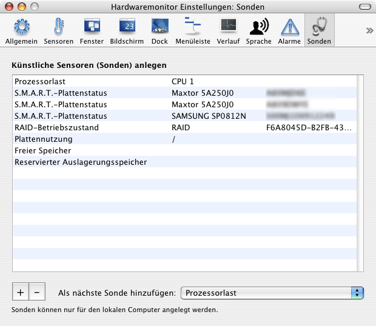

|
Definieren künstlicher Betriebssystemsensoren |
Einführung
Neben "echten" Sensoren, die Apple in Ihrem Mac eingebaut hat, kann Hardwaremonitor
auch weitere Betriebswerte Ihres Computers überwachen. Dies ist durch das Anlegen
künstlicher Softwaresensoren möglich, die wir im Folgenden Sonden nennen.
Diese Funktion steht nur in Hardwaremonitor zur Verfügung.
Sie können eine unbegrenzte Anzahl von Sonden definieren, die folgende Aspekte
des Betriebssystems überwachen:
- die aktuelle Last auf jedem Prozessorkern. Last ist definiert als Prozentwert
der Zeit, in der der Prozessor tatsächlich etwas "tut", im Gegensatz zur
Zeit, in der er sich im Leerlauf befindet.
- die aktuelle Durchschnittslast für alle Prozessorkerne. Wenn Ihr Computer
mehrere Verarbeitungseinheiten enthält, wird der Auslastungszustand zu einem
einzigen Wert zusammengefasst.
- die aktuelle Anzahl der Prozesse, die vom Betriebssystem
verwaltet werden.
- Plattennutzung auf jedem Volume. Die Nutzung ist definiert als Prozentwert
des belegten Speicherplatzes im Verhältnis zum gesamten Speicherplatz.
- freier Plattenplatz auf jedem Volume, gemessen in Bytes.
- genutzter Plattenplatz auf jedem Volume, gemessen in Bytes.
- freier Speicher, gemessen in Bytes des physischen RAM-Speichers.
- genutzter aktiver Speicher, gemessen in Bytes des physischen RAM-Speichers.
Dies ist Speicher, der von laufenden Programmen und dem Betriebssystem
verwendet wird und auf den in den letzten paar Millisekunden zugegriffen
wurde.
- genutzter inaktiver Speicher, gemessen in Bytes des physischen
RAM-Speichers. Dies ist Speicher, der von laufenden Programmen und dem Betriebssystem
verwendet wird, aber auf den in den letzten paar Millisekunden nicht zugegriffen
wurde. Obwohl dieser Speicher reserviert und in Benutzung ist, sind diese
Blöcke Kandidaten, um in Auslagerungsdateien auf der Festplatte verschoben
zu werden, falls andere Programme physisches RAM in einer aktiveren Weise
benötigen.
- genutzter nicht auslagerbarer Speicher, gemessen in Bytes des physischen
RAM-Speichers. Dies ist Speicher, der von laufenden Programmen und dem Betriebssystem
verwendet wird, aber nicht in Auslagerungsdateien auf der Festplatte verschoben
werden darf.
- Anzahl von Einlagerungen. Dies ist die Zahl der 4-KB-Blöcke, die im Moment
von der Festplatte in den Hauptspeicher übertragen werden. Dies schließt
sowohl Umlagerungsvorgänge ein (Blöcke, die vorher in Auslagerungsdateien
übertragen wurden und nun zurück geladen werden), beinhaltet aber auch normale
Ladevorgänge, wenn Programme optimierte Techniken verwenden, um Dateien zu
lesen.
- Anzahl von Auslagerungen. Dies ist die Zahl der 4-KB-Blöcke,
die im Moment vom Hauptspeicher auf die Festplatte übertragen werden. Dies
schließt sowohl Umlagerungsvorgänge ein (Blöcke, die auf die Platte ausgelagert
werden), beinhaltet aber auch normale Sicherungsvorgänge, wenn Programme
optimierte Techniken verwenden, um Dateien zu schreiben.
- reservierter Auslagerungsspeicher, gemessen in Bytes an
Speicherplatz. Dies ist die Anzahl von Bytes, die im Moment
auf der Festplatte vorreserviert sind, um für Auslagerungsvorgänge
genutzt werden zu können.
- Auslagerungsspeicher in Benutzung, gemessen in Bytes an Speicherplatz.
Dies ist der tatsächliche Betrag von virtuellem Speicher, der im Moment auf
Platte ausgelagert ist.
- Beachten Sie, dass dies nicht mit der gerade
ausgelagerten Größe des virtuellen
Speichers übereinstimmt.
- Netzanschluss ausgehende Pakete: Die Anzahl der Datenpakete, die aktuell
vom Computer auf einem ausgewählten Anschluss ins Netz übertragen werden.
Hardwaremonitor behandelt dies als einheitenlosen Zähler, aber da die Netzanschlüsse
mit einer Rate von einem Beobachtungsvorgang pro Sekunde überwacht werden,
ist dieser Messwert der Übertragungsgeschwindigkeit in Paketen pro Sekunde
äquivalent.
- Netzanschluss eingehende Pakete: wie vor, jedoch für eingehende Datenpakete.
- Netzanschluss ausgehende Bytes: Die Anzahl der Bytes (angezeigt als Kilobyte),
die aktuell vom Computer auf einem ausgewählten Anschluss ins Netz übertragen
werden. Hardwaremonitor behandelt dies als Speichergröße, aber da die Netzanschlüsse
mit einer Rate von einem Beobachtungsvorgang pro Sekunde überwacht werden,
ist dieser Messwert der Übertragungsgeschwindigkeit in Kilobyte pro Sekunde
äquivalent.
- Netzanschluss ausgehende Bytes (gesamt): Die Gesamtanzahl von Bytes (angezeigt
als Megabyte), die auf einem ausgewählten Netzanschluss ins Netz übertragen
wurden seitdem das Betriebssystem gestartet wurde.
- Netzanschluss eingehende Bytes: analog zur Zahl ausgehender Bytes überwacht
diese Sonde die eingehenden Bytes.
- Netzanschluss eingehende Bytes (gesamt): analog zur Gesamtzahl ausgehender
Bytes überwacht diese Sonde die Gesamtzahl eingehender Bytes.
- Netzanschluss Ausgangsfehler: die aktuelle Anzahl von Netzwerkfehlern wenn
der ausgewählte Netzanschluss versucht, Daten ins Netz zu senden. Hardwaremonitor
behandelt dies als einheitenlosen Zähler, aber da die Netzanschlüsse
mit einer Rate von einem Beobachtungsvorgang pro Sekunde überwacht werden,
ist dieser Messwert der Fehlerzahl pro Sekunde äquivalent.
- Netzanschluss Eingangsfehler: die aktuelle Anzahl von Netzwerkfehlern wenn
der ausgewählte Netzanschluss Daten vom Netz empfängt. Hardwaremonitor
behandelt dies als einheitenlosen Zähler, aber da die Netzanschlüsse
mit einer Rate von einem Beobachtungsvorgang pro Sekunde überwacht werden,
ist dieser Messwert der Fehlerzahl pro Sekunde äquivalent.
- Netzanschluss Kollisionen: die aktuelle Anzahl von Netzkollisionen,
die vom ausgewählten Anschluss erfasst wird. Hardwaremonitor
behandelt dies als einheitenlosen Zähler, aber da die Netzanschlüsse
mit einer Rate von einem Beobachtungsvorgang pro Sekunde überwacht werden,
ist dieser Messwert der Kollisionszahl pro Sekunde äquivalent. Beachten
Sie, dass Kollisionen nur bei bestimmten Netztechniken auftreten können,
z.B. bei gesharetem 10Base-5 Ethernet.
- S.M.A.R.T.-Plattenstatus, für jedes angeschlossene Laufwerk,
das online ist und Selbstüberwachung nach dem S.M.A.R.T.-Industriestandard
unterstützt. Der Wert ist 1, falls der Diagnoseprozessor des Laufwerks abschätzt,
dass das Laufwerk die nähere Zukunft ohne Ausfall überlebt. Der Statuswert
ist 0, wenn das Laufwerk abschätzt, dass sich seine Lebensdauer dem Ende
nähert. Für nähere Informationen über die S.M.A.R.T.-Technik verwenden Sie
bitte auch den Abschnitt Plattenüberwachungsdaten
anzeigen.
- RAID-Betriebszustand, für jedes Software-RAID-System,
das über Mac OS X angelegt wurde. Der Wert ist 1, wenn das RAID-System in
Ordnung und in voller Betriebsbereitschaft ist. Der Statuswert ist 0, wenn
der Betriebszustand eingeschränkt ist, z.B. wenn eine Platte des RAID-Systems
ausgefallen ist. Nur RAID-Systeme auf Basis der Mac OS X-eigenen Software
werden unterstützt. Sie können keine Sonden für RAID-Systeme von Drittanbietern
anlegen, da es keinen allgemeinen Standard gibt, um dies unterstützen zu
können.
- elektrische Leistung, für jedes Paar aus einem physisch vorhandenen Spannungs-
und Stromsensor, das Sie definieren. Falls Ihr Computer einen Spannungs-
und einen Stromsensor enthält, die beide das gleiche Objekt überwachen, z.B.
einen Akku oder eine Prozessorkarte, können Sie einen virtuellen Leistungssensor
definieren, der die elektrische Leistung dieses Objekts berechnet. Hinweis: Sie
sind selbst dafür verantwortlich, ein Sensorpaar auszuwählen, bei dem die
Definition der Leistung einen Sinn ergibt. Hardwaremonitor lässt auch zu,
dass Sie zwei Sensoren kombinieren, die unterschiedliche Geräte überwachen,
z.B. den Spannungssensor einer Batterie zusammen mit dem Ampere-Sensor
einer CPU-Karte, aber der resultierende Leistungswert würde in diesem Fall
keinerlei Sinn ergeben.
- Verbleibende Akkukapazität, definiert als Prozentwert
der aktuellen Akkukapazität
im Verhältnis zur Gesamtkapazität. Dies ist ein virtueller Sensor,
den Sie für jede Akkueinheit anlegen können.
Hinweis: Falls Sie interne "Hot-Swap"-Laufwerke oder externe eSATA-Laufwerke
verwenden, meldet eine Sonde des Typs S.M.A.R.T.-Plattenstatus auch dann
einen Plattenfehler, wenn Sie das Laufwerk abschalten oder entfernen.

Anlegen und Ändern von Sonden
Das Anlegen einer neuen Sonde ist im Abschnitt Sonden des
Einstellungsfensters von Hardwaremonitor möglich. Wählen Sie den
gewünschten Typ der Sonde und betätigen
Sie dann die Schaltfläche + unter der linken unteren Ecke
der Sondentabelle. Falls nötig fragt Hardwaremonitor
noch nach Zusatzdaten zum Anlegen der Sonde, z.B. nach der Prozessornummer
für einen Prozessorlastsensor, oder nach der Festplatte beim Anlegen eines
virtuellen S.M.A.R.T.-Sensors. Die Sonde wird sofort hinzugefügt.
Sonden verhalten sich genauso wie "echte" Sensoren. Sie können
sie ohne Einschränkungen verwenden, zum Beispiel um Alarme zu definieren, Verlaufsdaten
aufzuzeichnen, Messwerte in Ausgabefenstern anzuzeigen, usw.
Um eine Sonde zu löschen, wählen Sie deren Eintrag in der Tabelle
und drücken Sie den unteren Knopf -. Verlaufsdaten der gelöschten
Sonde werden ebenso mitgelöscht. Es ist nicht möglich, die Verlaufsdaten einer
gelöschten Sonde wiederzugewinnen, auch wenn Sie versuchen, die gleiche Sonde
noch einmal anzulegen.
Es ist nicht möglich, zwei identische Sonden
anzulegen, d.h. Sonden des gleichen Typs, die dasselbe Objekt überwachen.
Hardwaremonitor kann Sonden nur auf dem lokalen Computer anlegen. Es ist zwar
auch möglich, Sonden entfernt stehender Computer zu überwachen, aber
in diesem Fall müssen Sie diese erst mit einem Exemplar von Hardwaremonitor
anlegen, das auf dem fernen Computer läuft.
Importieren und Exportieren von Sondendefinitionen
Falls Sie eine aufwändige Einrichtung von künstlichen Sensoren
angelegt haben, möchten Sie vielleicht diese Definition auf anderen Computern
der gleichen Baureihe wiederverwenden. Dies ist auch dann möglich, wenn Sie
kein Mac OS X-Netzwerk mit roamenden Benutzer-Accounts verwenden: Sie können
die Sondendefinitionen über Dateien exportieren und importieren.
Um die aktuelle Liste von Sondendefinitionen zu exportieren,
wählen Sie den Menüpunkt Sonden exportieren … aus dem Klappmenü Import/Export in der oberen rechten Ecke der Einstellungskarte Sonden. Nach Angabe eines
Dateinamens werden die Definitionen abgespeichert.
Um eine Datei mit Sondendefinitionen zu importieren, wählen Sie
den Menüpunkt Sonden importieren … aus dem Klappmenü Import/Export. Nach Auswahl
einer Datei werden die Definitionen geladen, wobei alle Ihre aktuellen Sonden
ersetzt werden.
Es wird empfohlen, diese Funktion nur innerhalb Computern der
gleichen Baureihe zu verwenden. Falls Sie versuchen, eine Sondendefinition
zu importieren, die sich auf ein Gerät bezieht, das in der aktuellen Hardware
unbekannt ist (wie ein Netzwerkanschluss oder ein elektrischer Sensor, der
auf diesem System nicht vorhanden ist), wird Hardwaremonitor diese Sonde je
nach Einzelfall entweder automatisch verwerfen oder eine nicht funktionierende
Sonde anlegen, die immer den Messwert "---" liefert. Nach dem Importieren von
künstlichen Sensoren einer unterschiedlichen Baureihe ist zu empfehlen,
die Liste der Sonden danach zu überprüfen.
Inhaltsverzeichnis